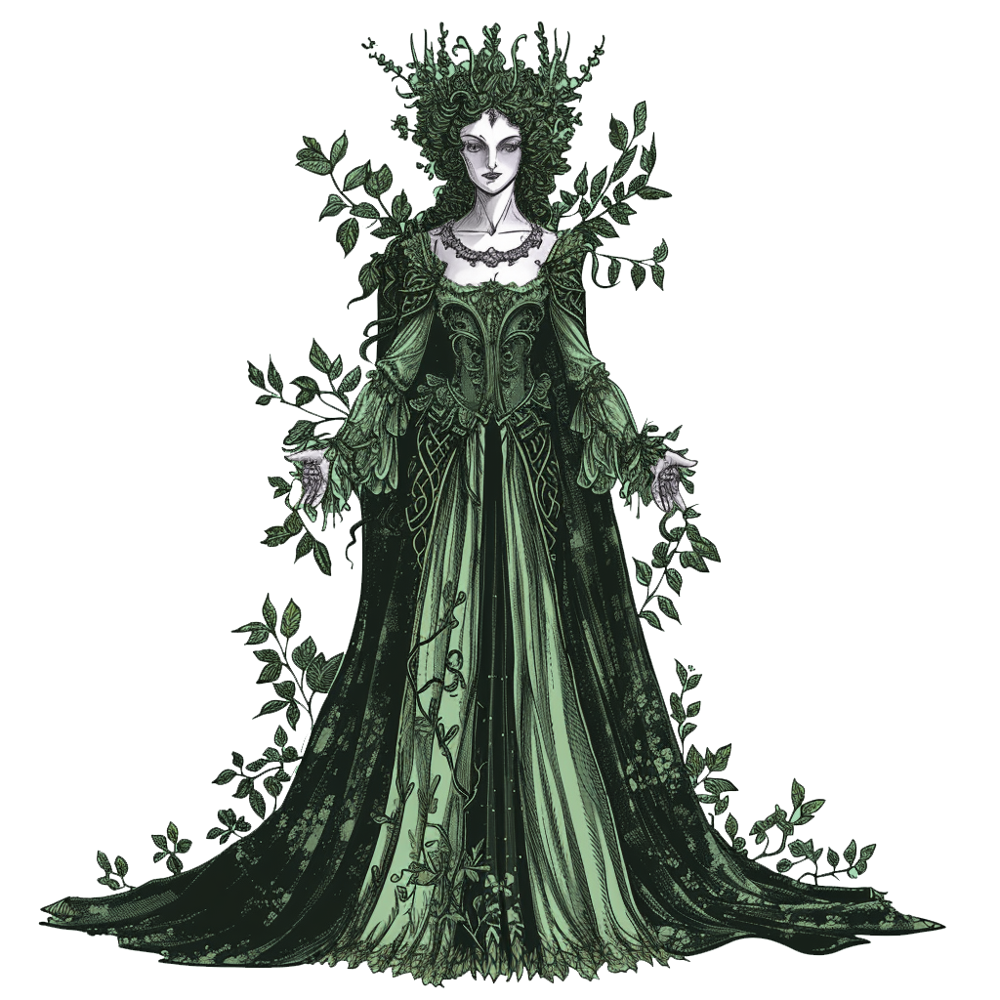
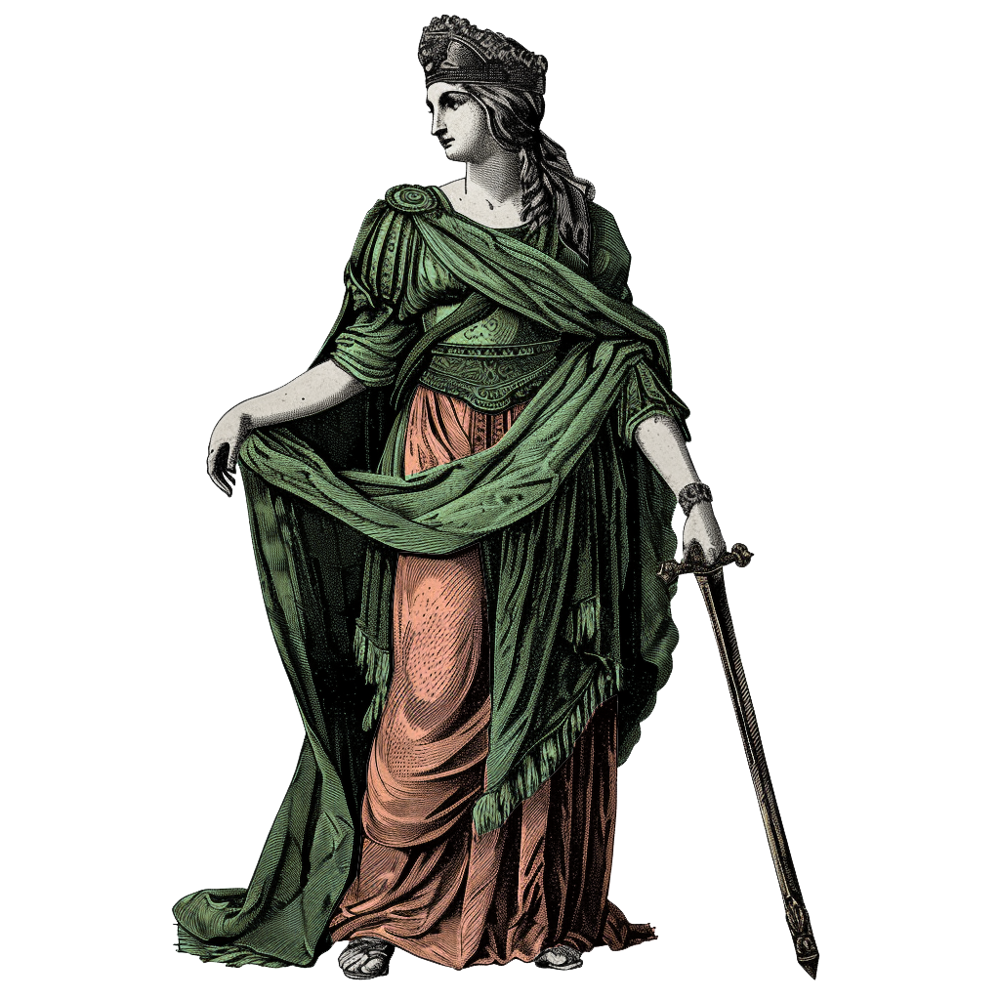
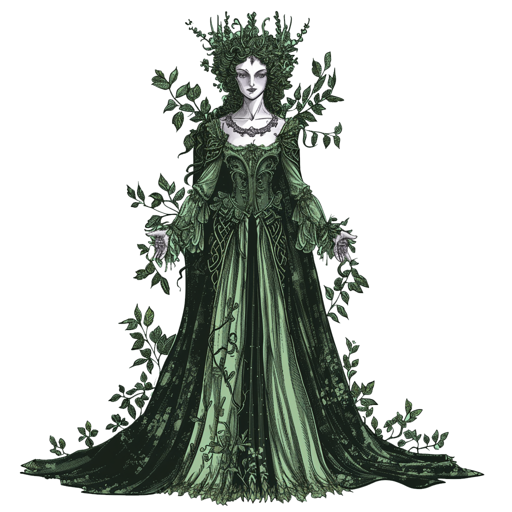
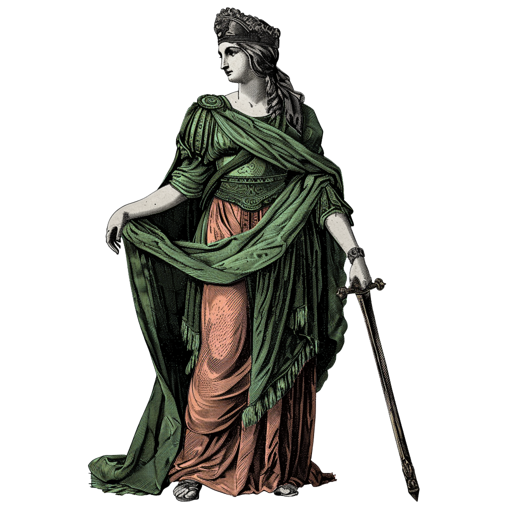

סיכום חלום ליל קיץ
בשלושת השיעורים האחרונים העמקנו את קריאתנו במחזה "חלום ליל קיץ".
נגענו במספר נושאים שעולים שוב ושוב במחזה בהקשרים שונים.
בואו נעשה סדר ונרכז יחד את המהלכים השונים של הדיון שלנו במחזה:

>
בשלושת השיעורים האחרונים העמקנו את קריאתנו במחזה "חלום ליל קיץ".
נגענו במספר נושאים שעולים שוב ושוב במחזה בהקשרים שונים.
בואו נעשה סדר ונרכז יחד את המהלכים השונים של הדיון שלנו במחזה:

"חלום ליל קיץ" נפתח כסיפור יחסית פשוט על אהבה נכזבת: ארבעה אוהבים צעירים שנתונים במשולש אהבה לא סימטרי, כשאחת משתי הנשים, הלנה (בתחילת המחזה) והרמיה (בהמשך המחזה) מוצאת עצמה נבגדת על ידי הגבר שנשבע לה אמונים. יתרה מזאת, גם כשמדובר באהבה הדדית (הרמיה וליסנדר) - האב מאיים על בתו במוות אם לא תסור למרותו ותינשא לעלם הצעיר שבחר עבורה.
כלומר, נקודת הפתיחה של המחזה מציגה את המתח בין הרצון של צעירים להינשא לבחיר או בחירת ליבם ובין והלחץ הפטריארכלי שמבקש לשדך בני זוג ללא קשר לאהבה. בחברה הנוצרית-פטריארכלית (שהעיר אתונה מייצגת במחזה) אין לאהבה מקום, ולכן בתוך המתח הזה - אהבה תמיד תהיה אהבה נכזבת.
המתח בין רגש האהבה והחברה הפטריארכלית מוקרן גם לסיפור המסגרת המיתי של המחזה על תזאוס (המלך המיתולוגי של אתונה) ובת זוגו היפוליטה (מלכת האמזונות הפראיות). על פי האגדה, תזאוס נשא את היפוליטה לאישה אחרי שכבש אותה בכוח החרב וכפה עליה לסור למרותו. בכך הוא לכאורה "מתרבת" חברה מטריארכלית קדומה והופך אותה לחברה פטריארכלית. במחזה אין שום סימן לכך שהיפוליטה אוהבת את תזאוס או שמחה להינשא לו, למרות כל מילות האהבה שתזאוס מרעיף עליה.

כשארבעת האוהבים בורחים זה אחר זו אל היער, הרחק מהעיר, הם פוגשים בפיות הקסומות שגרות ביער. הפיות, כמו שראינו, מייצגות כוחות טבע ודמיון קמאיים וקדם-תרבותיים. הקשר בין אוברון וטיטניה מבוסס על רגשי אהבה יצריים, והמעמד שלהם שוויוני בתוך עולם הפיות. הפיה פק במיוחד מסמל כוחות של שינוי צורה וכשפים שיכולים לשנות את המציאות ולתעתע.
ומכאן, כמו שהלנה אומרת ביער, האוהבים מגלים שרגש האהבה – כמו כל העולם הרגשי שלנו – מתקיים בקו התפר שבין מציאות ודמיון. הרגשות, מעצם היותם אי-רציונליים, משולים לדמיון רב התהפוכות וחסר הגבולות שיכול – בדיוק כמו הכשפים של הפיות – לתעתע בנו ולשנות את התודעה שלנו ביחס למציאות. כלומר, למציאות הרגשית יש תוקף ממשי בעולם לא פחות מהמציאות החומרית.

בעלי המלאכה בראשות בוטום הם אמנים חובבנים שמקווים לעלות מחזה טרגי על סיפור אהבתם הנכזב של פיראמוס ותיסבי לכבוד החתונה של תזאוס. בוטום, כמו פק, מהווה דמות מטא-תיאטרלית חשובה, שכן הוא מתגלה כשחקן תיאטרון "טוטאלי" שלא מסוגל להבדיל בין מציאות לדמיון, בין ייצוג אמנותי ובין המציאות של הקהל. מכאן שבוטום מהווה עבורנו אנלוגיה מטא-תיאטרלית לדיון של המחזה בקשר בין רגש האהבה והמציאות בה אנו חיים.
בוטום מוצא לבסוף אהבה בלתי אפשרית בלב היער תחת כישוף בדמות איש חמור וכשהוא נעור מהכישוף, כמו מחלום, הוא מזכיר לנו שההצגה עצמה בה אנו צופים היא כמו חלום, או עולם שכולו דמיון ורגש, שלא ניתן באמת אף פעם להתעורר ממנו לגמרי. משהו מההצגה תמיד נשאר איתנו כשהיא מסתיימת, ומכאן, בהשאלה, לא תמיד נוכל להתכחש לרגשות ולדמיון שלנו כשאנחנו מנסים לפעול בעולם באופן לוגי או מושכל.
 



שייקספיר קושר את הדיונים המורכבים האלה, דרך הנאום של תזאוס והתשובה של היפוליטה, בשתי תפיסות של המציאות שמקובל לכנות בפילוסופיה היום תיאוריית ההתאמה ותיאוריית הלכידות. בעוד שהעולם הלוגי העובדתי עובד על עקרונות של התאמה בין טענות למציאות שניתנת לכימות, עולם הרגש והדמיון מעמיד אותנו בפני מציאות שעובדת על לכידות פנימית של טענות כפי שמספר אנשים שונים חולקים אותן.
רעיון זה מקרין על החוויה של המחזה כולו, כפי שעולה מההצגה בתוך ההצגה, כתרגום לדיון של שייקספיר במטאפורה הכללית של "העולם כולו הוא במה". אם העולם הוא במה, והבמה היא העולם, אז לא ניתן להפריד ביניהם, כמו שבחיינו הרגשיים לא ניתן להפריד בין רגש ומחשבה, או, בחזרה לנקודת הפתיחה, להתכחש לרגש האהבה מול חוקי חברה פטריארכלים כפייתיים.
שייקספיר מלמד אותנו על כוחה של האהבה: מצד אחד, היא נוטה לסבך את המציאות החברתית; אבל מצד שני, היא גם נותנת לנו מפלט מאותה מציאות שלא תמיד קל לנו או רצוי לנו לחיות בה.
ממשותם של הרגשות, ושל רגש האהבה במיוחד, מחדדת עבורנו שיתכן שהעולם לא פועל לפי ה“היגיון”, שהניסיונות שלנו לסדר את העולם ולהבין אותו הם במקרה הטוב חלקיים, ובמקרה הרע דמיוניים כמו האגדות שאנשים בתרבויות קדומות המציאו בדיוק בשביל אותה מטרה.
אהבה בדרך כלל פוגשת אותנו בעולם בלי שביקשנו אותה ובלי שידענו להתכונן אליה. לדעת איך להתנהל בשני העולמות ביחד, של רגש ושל מציאות חומרית, זה לא דבר קל: למרבית האנשים זה מהלך שדורש מודעות עצמית רבה ולא מעט אומץ.
בדיון שלנו בטרגדיה "רומיאו ויוליה" נראה את הצד השני של אותו המטבע: מה קורה לזוג צעיר שמוצאים את עצמם במלכוד בלתי אפשרי בין אהבתם ותשוקתם ובין השיח החברתי שגוזר עליהם את מותם.